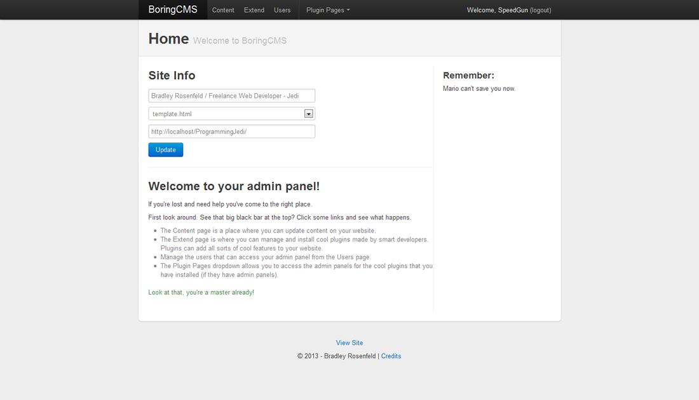

Things I've Made
-

Christian Workshops of the Fox Valley
CWF badly needed a new website and a new way of handling registration.
As assistant webmaster, I set the goals. I wanted the website to be responsive, look good, and for registration to be really easy.
I created two parts to the website: the forward facing homepage with information for prospective families, as well as a backend that allows families to register for classes, create classes, and manage their schedules.
To make it I mixed just the right amount of HTML5, Javascript, CSS3, PHP, MySQL, and Bootstrap (for the backend).
View Site -
HTML5Notes
I made this app for the December Mozilla Dev Derby as a fun project.
This project is a really easy to use notetaking app that stores the notes in local storage. Better yet the app is responsive and can work offline making it perfect for use on smartphones.
To make it I mixed just the right amount of HTML5, Javascript, CSS3, and unicorn tears.
Fork it on Github -

Russell4Coroner
A local media company needed a website for a political campaign.
They had a strict set of requirements. The website needed to be easy to update and it needed to be usable on any device.
In response I created a full Wordpress solution with a snazzy responsive design.
Created with HTML5, CSS3, jQuery, and Wordpress.
-

BoringCMS
BoringCMS is a content management system for CSS geeks.
I was tired of "spaghetti" code. So I created a CMS that takes a CSS selector and inserts the content into the selected element.
Working on this project allowed me to expand my experience with databases and it gave me new knowledge of how to create production quality code. The code is open source, so go play around with it!
Created with HTML, CSS, jQuery, Bootstrap, phpQuery, PHP, and MySQL.
Fork it on Github -
Bradley Rosenfeld loves TU!
I love my university almost as much as I love to create web sites. As a Computer Science Major I realized I had space on the Computer Science servers for web hosting. So I made a nice little landing page explaining to the world how I really do love Taylor University.
Lovingly created with HTML5 and CSS3.
View Project -

CSS Off 2012
This was my epic entry for the Unmatched Style CSS Off 2012.
Some of the requirements were that entries needed to support older browsers and they needed to be responsive.
To achieve this goal I deployed a test suite of 10 different browsers on 3 different devices. All to make my entry look great everywhere.
I didn't win, but I did get a chance to test my programming skills with a really nice looking design.
Programming by me, the design was provided by the contest.
View Entry -
Addons
Over the years I have created numerous addons to help the Internet do things more efficently.
- View more projects on GitHub